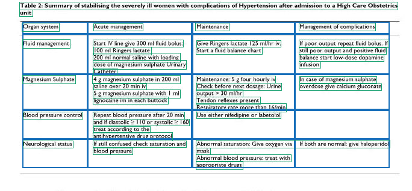
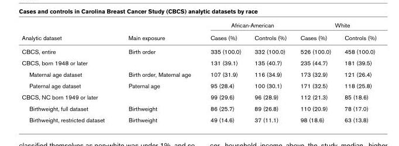
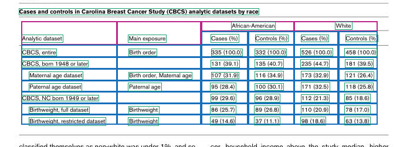
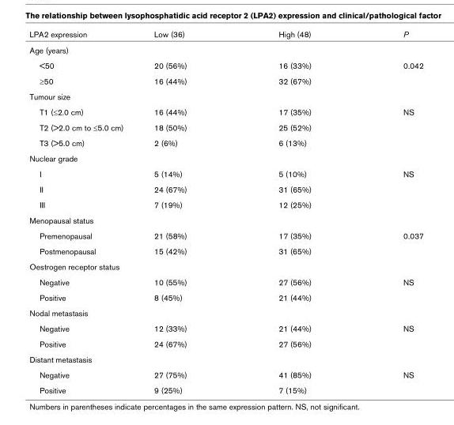
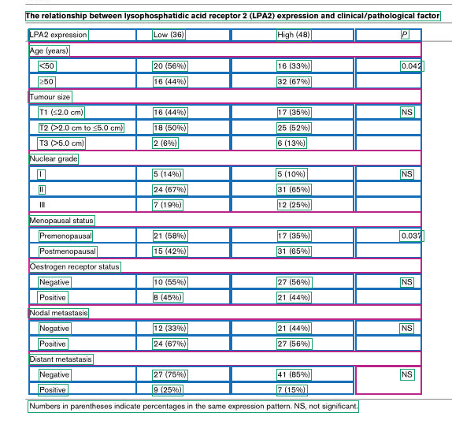
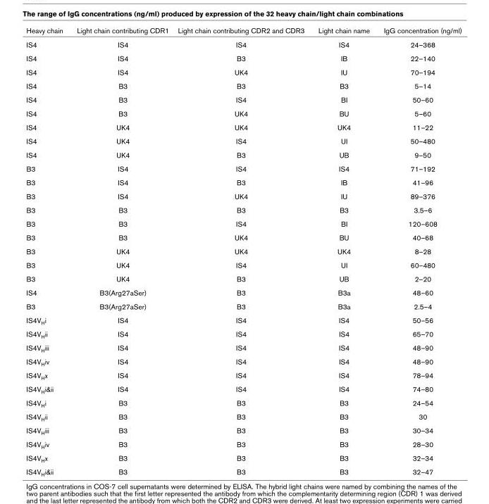
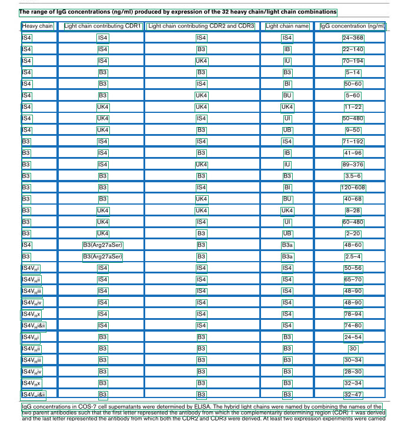

CPU inference. Original TATR checkpoint + RapidOCR PP-OCRv4. Assignment counts are NOT recognition accuracy. OCR may merge neighboring columns and misread symbols; see REPORT.md.
5 rows × 4 columns | 41/43 text boxes assigned

9 rows × 6 columns | 48/49 text boxes assigned


24 rows × 4 columns | 65/67 text boxes assigned


33 rows × 5 columns | 165/168 text boxes assigned

